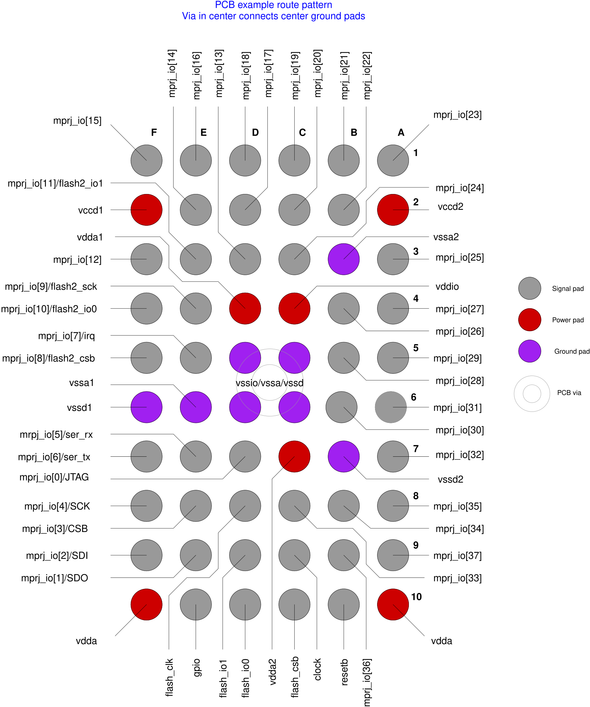

The PCB and the Path to the Transistor
A printed circuit board carries power and signals between packages. Follow one supply current from the board’s regulator to a transistor on the die and back, and every structure in Part I becomes part of one circuit.
What you will learn
- Describe the layers of a typical PCB, and what traces, planes, vias and footprints are.
- Read an escape-routing pattern, and explain why a package drawing can be mirrored relative to the board.
- Trace the complete supply loop from the regulator to a transistor and back, and estimate where the voltage goes.
1. What a PCB is made of
A printed circuit board (PCB) is a laminate: sheets of glass-fiber cloth soaked in epoxy, bonded to copper foil under heat and pressure. FR-4 is the common grade of this glass-epoxy. Each copper layer is etched into a pattern of traces (wires), planes (large continuous areas, usually ground or a supply), and pads where component leads are soldered. Plated holes called vias join one layer to another. A thin polymer solder mask, usually green, covers everything that should not take solder, and a printed silkscreen labels the parts.
Standard copper is “1 oz”, meaning one ounce of copper per square foot: about 35 µm thick. A common four-layer board puts signals on the two outer layers, a solid ground plane on the second, and a power plane on the third.
Compare the board with the die. Board copper is about 35 µm thick; SKY130’s thickest metal, met5, is 1.26 µm, and li1 is 0.1 µm (lesson 3). The sheet resistance of 35 µm copper is its resistivity divided by its thickness: 1.7 × 10⁻⁸ Ω·m / 35 × 10⁻⁶ m ≈ 0.49 mΩ/□. The HD tech LEF gives met5 0.0285 Ω/□ — about 60 times higher — and li1 12.2 Ω/□, about 25,000 times higher. Distances on a board are millimeters to centimeters, and on a die micrometers to millimeters, so both matter; but per square, on-die wiring is far more resistive.
2. Footprints and escape routing
The board carries a footprint (land pattern) for each package: copper pads that match its leads or balls, drawn from the package drawing. For a ball array, the inner balls are surrounded by outer ones, so their traces must escape between the outer balls, or drop through a via to another layer.

3. Follow the supply current
A voltage regulator on the board — often an LDO (low-dropout regulator) — holds its output at, say, 1.8 V. From there the current crosses every structure in Part I: board planes and vias, the package ball or lead and its bond wire or bump, the pad and the pad ring’s supply bus, the core’s power rings and straps, and finally a met1 cell rail into the source of a transistor (lesson 14). After doing its work it returns through the ground side of every one of those structures.
Each block has resistance, which drops voltage in proportion to current (V = I·R, “IR drop”), and inductance, which drops voltage in proportion to how fast the current changes (V = L·di/dt). The transistor sees only what is left: the difference between its local VPWR and its local VGND.
4. Worked example: where does the supply voltage go?
| Segment (supply side only) | R (assumed) | L (assumed) | Steady DC (direct-current) drop at 20 mA | L·di/dt for 20 mA in 1 ns |
|---|---|---|---|---|
| Board plane and vias | 2 mΩ | 0.5 nH | 0.04 mV | 10 mV |
| Package: two power connections in parallel | 25 mΩ | 1.0 nH | 0.5 mV | 20 mV |
| On-die ring, straps and rails | 1 Ω | small | 20 mV | small |
| Total, supply side | ≈ 1.03 Ω | ≈ 1.5 nH | ≈ 20.5 mV | ≈ 30 mV |
All values are assumptions chosen to show the pattern; they are not SKY130 or Caravel data. The ground side adds a similar amount again, so the transistor could see its local supply move by around 40 mV at DC and 60 mV during a fast step — more than 5% of 1.8 V in total. The pattern is typical: the on-die grid dominates the steady drop, while the package and board inductance dominate fast transients (lesson 68, lesson 69).
5. Decoupling: charge stored close to the load
A decoupling capacitor connected between supply and ground near the load can supply a fast current pulse locally, so that the pulse does not have to travel through the whole inductive path. Boards carry capacitors from nanofarads to microfarads next to each package; dies carry their own on-die decap cells (lesson 52). A capacitor helps only as fast as its own connection allows: the vias and traces to it have inductance too, which is why it sits right beside the package.
A quick sizing check: to supply 20 mA for 1 ns while the voltage droops no more than 18 mV (1% of 1.8 V), the charge needed is Q = I·t = 20 pC, so C = Q/ΔV ≈ 1.1 nF. That charge must be close enough to arrive within the nanosecond; behind 1.5 nH of package and board inductance it would not. This is why fast edges are served by on-die capacitance and slower demand by board capacitors.
6. Signals take the same path
An output signal travels the same way: from a core flip-flop to the GPIO cell’s driver, out of the pad, through the package and along a board trace to another chip. Its return current flows back underneath it in the nearest reference plane. A trace routed over a gap in the ground plane forces that return current to detour, enlarging the loop and its inductance; the analog lessons return to this (lesson 83).
Check your understanding — why do decoupling capacitors sit beside the package rather than next to the regulator?
Their job is to supply fast current changes locally. Placed by the package, the loop from capacitor to die is short and has little inductance. Placed by the regulator, the fast current would still have to cross the board traces and planes in between, and their inductance would limit how fast the current can change.
Check your understanding — a signal trace on L1 crosses a slot cut in the L2 ground plane. What happens to its return current?
Return current at high frequency flows in the plane directly under the trace. At the slot it must detour around the end of the slot, so the loop area — and the inductance and radiated field — grows. Neighboring signals that share the detour couple to each other.
Key takeaways
- A PCB is a glass-epoxy laminate with patterned copper: traces, planes, pads and vias; 1 oz copper is about 35 µm.
- Footprints copy the package drawing; inner balls escape between outer ones or through vias; bump-side drawings are mirrored relative to the board.
- Supply current leaves the regulator, crosses board, package, pad ring, core grid and cell rail, and returns through the ground side of each.
- Resistance sets the steady (IR) drop; inductance sets the drop during fast changes (L·di/dt).
- Decoupling capacitors supply fast current locally; their own connection inductance limits them.
Sources & scope
Written 9 November 2026. Board materials and copper weights are standard industry values; the worked example uses assumed resistance and inductance values. Sheet resistances for SKY130 are from the pinned HD tech LEF.
- Caravel documentation images (Apache-2.0) — PCB route pattern (Figure 2)
- UPC course notes: printed circuit boards — FR-4 and 35 µm copper
- JLCPCB: PDN design for PCBs — four-layer stackups and capacitor placement
- Applied EE notebook: stackups and materials
- HD technology LEF, pinned revision — met5 and li1 sheet resistance
All 84 lessons
- Part I · Foundations: the physical chip and its vocabulary
- 1. What Is a Chip? Board, Package & Die
- 2. The Silicon Wafer: From Crystal to Dies
- 3. How a Die Is Built: SKY130 Layers & Lithography
- 4. The MOSFET: SKY130’s Transistor
- 5. Anatomy of a Die: Core, Pad Ring & Seal Ring
- 6. Packages: Wire Bonds, Flip-Chip, QFN & WLCSP
- 7. The PCB and the Path to the Transistor
- 8. The Design Flow and Its Files: RTL to GDS
- 9. Signals Primer: DC, AC, RMS, Decibels & the FFT
- Part II · Transistors to logic gates
- 10. Logic Gates at the Transistor Level
- 11. Drive Strength & Transistor Sizing
- 12. More Gate Topologies
- Part III · Standard-cell layout
- 13. Site Rows & Standard Cell Placement
- 14. The Power Grid & Routing Grids
- 15. Metal Layers, Vias & the Stackup
- 16. Inside a Standard Cell's Layout
- 17. The Cell Template: Tracks, Sites & Edges
- 18. Anatomy of a Bigger Cell
- 19. Pin Access & Porosity
- 20. A Flip-Flop From the Inside
- Part IV · Loads, timing and interconnect
- 21. Loads
- 22. Liberty Files: What a Cell Library Records
- 23. Reading Liberty Timing Tables
- 24. Standard-Cell Characterization: How Liberty Is Made
- 25. Timing
- 26. Setup and Hold
- 27. Latch-Based Design & Time Borrowing
- 28. Routing Resistance and Parasitics
- 29. Delay from Physics: Transistor, Contact, Via, Wire & Gate
- 30. Electromigration
- 31. Reliability & Aging: HCI, BTI, TDDB & Self-Heating
- 32. DFM, Variation & Yield: A Digital View
- Part V · Digital implementation
- 33. RTL Patterns: FSMs, Handshakes, Resets & Lint
- 34. RTL, Synthesis & Timing Constraints
- 35. The Clock Tree
- 36. Clock Generation: Oscillators, DCO, PLL & Jitter
- 37. Clock Gating & Power States
- 38. Power Analysis & Low-Power Cells
- 39. Clock-Domain Crossings & Reset
- 40. Scan
- 41. DFT Beyond Scan: Faults, ATPG, BIST and JTAG
- 42. A Timed Logic Path: Registers, Clocks, Scan & Speed/Power
- 43. Memories: SRAM, OpenRAM and DFFRAM
- 44. Datapath & Arithmetic
- 45. Multi-Corner STA: OCV, CRPR & Hold Cells
- 46. Functional Verification: Testbenches, Assertions, Formal & Gate-Level Sim
- Part VI · Physical cells and the floorplan
- 47. Fill Cells
- 48. Well Taps and Latch-up
- 49. Endcaps
- 50. Tie Cells
- 51. Antenna Diodes
- 52. Decap Cells
- 53. Spare Cells and ECO
- 54. Level Shifters
- 55. Floorplan
- 56. Caravel Integration: The User Project Wrapper
- 57. Hierarchical Design, Abstracts & ECO
- 58. Placement: Global, Legalization & Detailed
- 59. Routing & Timing Closure
- 60. Digital Signal Integrity: Crosstalk Delay & Glitch
- 61. Metal Fill and Cell Fill
- 62. Physical Verification Signoff
- 63. Power-Integrity Signoff: Static IR, Dynamic IR & EM
- Part VII · The chip boundary: I/O, ESD and package
- 64. The I/O Ring
- 65. ESD and Clamps
- 66. I/O Fill
- 67. RDL Routing
- 68. I/O Power and IR Drop
- 69. Power, Package & Thermal Coupling
- 70. Tapeout, MPW & Tiny Tapeout
- 71. Post-Silicon Bring-Up, Test & Characterization
- Part VIII · Analog circuits
- 72. Analog Bias, gm & Headroom
- 73. Feedback, Loading & Stability
- 74. Differential Pairs, Common Mode & CMFB
- 75. Noise, Mismatch & Variation
- 76. References, Temperature & Startup
- 77. Comparators & Power Management: StrongARM, LDO & POR
- 78. Matching, Layout & Extracted Netlists
- Part IX · Mixed-signal: sampling, conversion and verification
- 79. Sampling, Aliasing & Settling
- 80. ADC & DAC Interfaces
- 81. FFT, Noise & Distortion Measurements
- 82. Calibration, Trimming & Testability
- 83. Crosstalk, Return Paths & Isolation
- 84. Mixed-Signal Verification & Bring-Up
Updated 11 November 2026 · 84 lessons · Offline lessons, diagrams, source code and recorded results · External references require internet access.